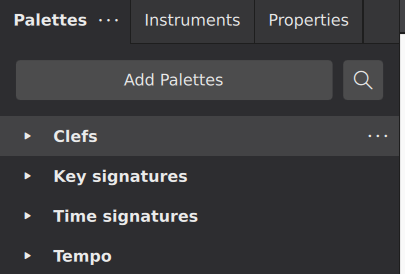
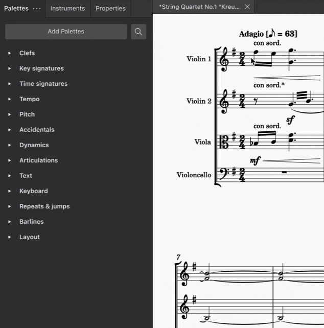
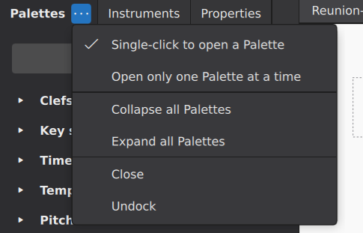
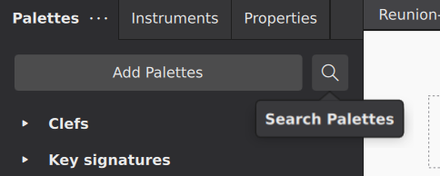
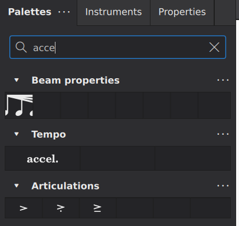

使用面板
概述
面板（Palettes）面板包含你可以添加到乐谱中的音乐符号。符号按不同面板组织，例如 调号 和 演奏记号。默认会显示一组基本面板，但你可以轻松添加和自定义更多面板。
请参阅 面板（自定义），了解如何添加、删除、编辑和重新排列任何面板中的项目，以及创建和自定义你自己的面板。
访问面板
主窗口左侧边栏顶部默认显示三个标签页：面板、乐器 和 属性。如果侧边栏当前显示的是其他标签页，请单击 面板 标签页以显示面板。

你可以使用 视图→面板 或键盘快捷键 F9 打开和关闭 面板。如果侧边栏中的所有面板都关闭了，侧边栏本身也会关闭，为乐谱显示腾出更多空间。
与 MuseScore 中的大多数其他面板一样，面板 也可以 取消停靠，作为独立窗口使用。
向乐谱添加面板项目
要向乐谱添加面板项目，请先打开相应的面板（如果尚未打开），方法是单击其标题或左侧的箭头图标。该面板中的项目会以网格形式显示。

一般来说，要把面板项目应用到乐谱中，你可以先在乐谱中选择目标元素再单击面板项目，或者把项目从面板拖到目标元素上。关于通过键盘应用面板项目的信息，请参阅下文 搜索与导航 一节。
应用于单个乐谱元素的项目
许多面板项目——例如演奏记号、力度记号和大多数其他文本——都可以应用于单个音符、休止符或其他乐谱元素。使用拖放时，会出现一条虚线，指示松开鼠标时面板元素将附加到哪个乐谱元素。
不过，通常更高效的做法是先在乐谱中选择目标元素，再单击面板项目。当你希望把同一个面板项目应用到多个乐谱元素时尤其如此，因为这种方法可以一次把面板项目应用到多个乐谱元素。
要把面板项目应用到一个或多个乐谱元素：
- 选择 你要应用面板项目的元素（单个、列表或范围选择）
- 单击面板项目
面板项目通常会添加到每个选中的元素上。注意，当选择了范围时，单击表示文本的面板项目（包括力度和速度标记）时，该项目只会添加到范围内的第一个元素。系统文本（包括速度标记）只会应用到最上方谱表；其他文本会应用到每条所选谱表的第一个选中元素。
应用于范围的项目
诸如力度变化线、连音线、八度线和踏板标记等面板项目会应用到一个范围，而不是单个音符或休止符。添加它们的过程相同：
- 选择 你要应用面板项目的元素范围
- 单击面板项目
应用于整个小节的项目
某些面板项目（如小节线、拍号、反复跳房子记号和排版分隔符）通常应用于整个小节（或一个范围的小节），而不是特定的音符或休止符。把这些添加到乐谱的过程与其他面板项目相同：
- 选择 你要应用面板项目的小节或小节范围
- 单击面板项目
展开和折叠面板
可以单击标题栏或标题左侧的箭头图标，单独展开（打开）或折叠（关闭）一个面板。此外，你还可以一次展开或折叠所有面板，或让 MuseScore 自动关闭面板。要访问这些选项，请单击面板窗口顶部的 ... 按钮弹出面板菜单。

- 单击打开面板：控制面板是通过单击还是双击打开
- 一次只打开一个面板：勾选后，每当你打开一个面板，任何已打开的面板都会自动关闭
- 折叠所有面板：立即关闭所有已打开的面板
- 展开所有面板：立即打开所有面板
搜索与导航面板
你也可以使用键盘而不是鼠标来搜索和导航面板。
搜索
要按名称搜索面板元素，使用键盘快捷键 Ctrl+F9（Mac：Cmd+F9），或单击 面板 顶部的放大镜图标。

这会显示一个搜索框。当你在框中键入字符时，MuseScore 会显示所有匹配的面板项目。

要关闭搜索框，请单击“X”图标。
导航
面板完全可以通过键盘访问。上文 所述的搜索功能是你开始的一种方法，但你也可以使用 Shift+F6 把焦点移到侧边栏，从而把键盘焦点放到 面板 上。